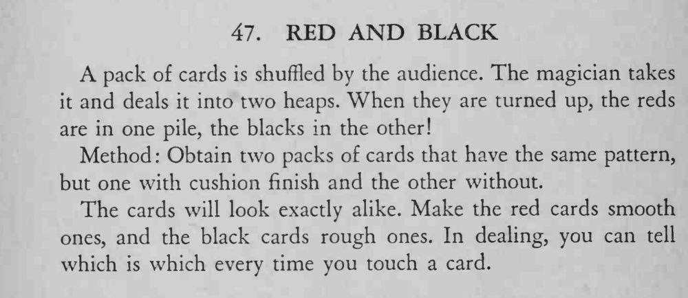

观众把牌洗乱，魔术师接过来分开发成两堆，翻开一看，一堆全是红牌，另一堆全是黑牌。
两副牌外观必须一模一样，差别只在牌面手感；发牌速度要匀，摸牌时不要停顿。

A pack of cards is shuffled by the audience. The magician takes it and deals it into two heaps. When they are turned up, the reds are in one pile, the blacks in the other! Method Obtain two packs of cards that have the same pattern, but one with cushion finish and the other without. The cards will look exactly alike. Make the red cards smooth ones, and the black cards rough ones. In dealing, you can tell which is which every time you touch a card.